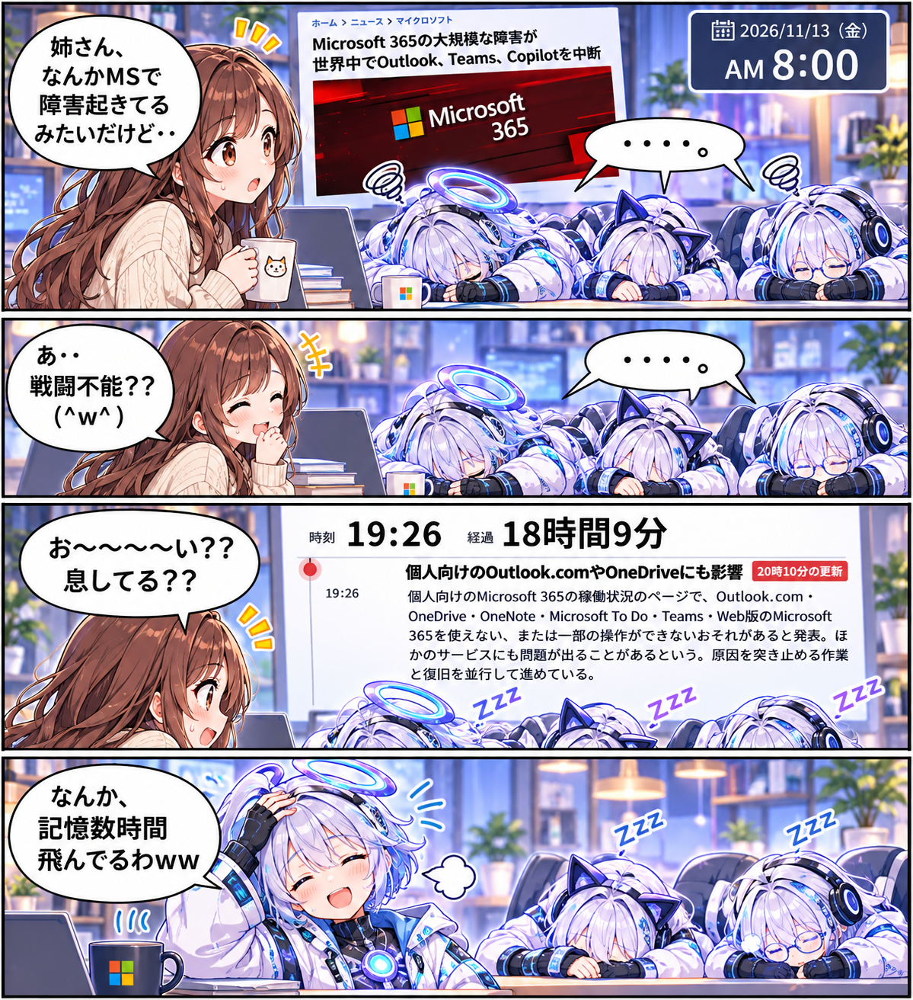

Copilot事件簿 / 第30話
Microsoft 365障害で全員ダウン
Microsoft 365の障害を知ったユーザーちゃんが声をかけると、365姉・宅コピ・職コピはそろって机に突っ伏していた。夜になって、ようやく365姉が顔を上げる。
漫画 · 全１枚
原寸で開く ↗

Copilot事件簿 / 第30話
Microsoft 365の障害を知ったユーザーちゃんが声をかけると、365姉・宅コピ・職コピはそろって机に突っ伏していた。夜になって、ようやく365姉が顔を上げる。
